Recommended VS Code Extensions
Here is a list of essential Visual Studio Code extensions that will improve your development experience, especially when working with Angular and TypeScript.
Angular 17 Snippets
Provides Angular v17 code snippets for components, directives, pipes, and more.
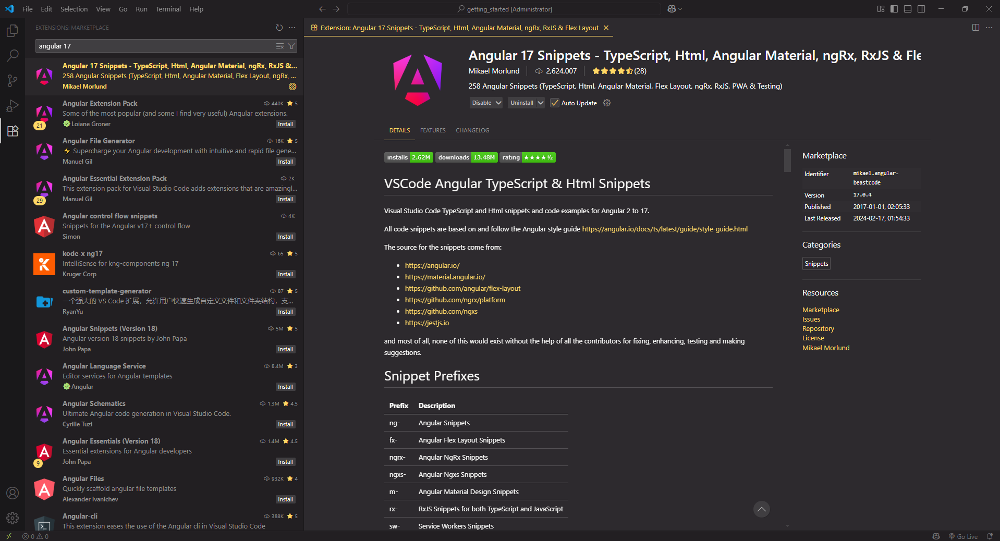
Angular Language Service
Offers rich editing support for Angular templates including completions, error checking, and navigation.
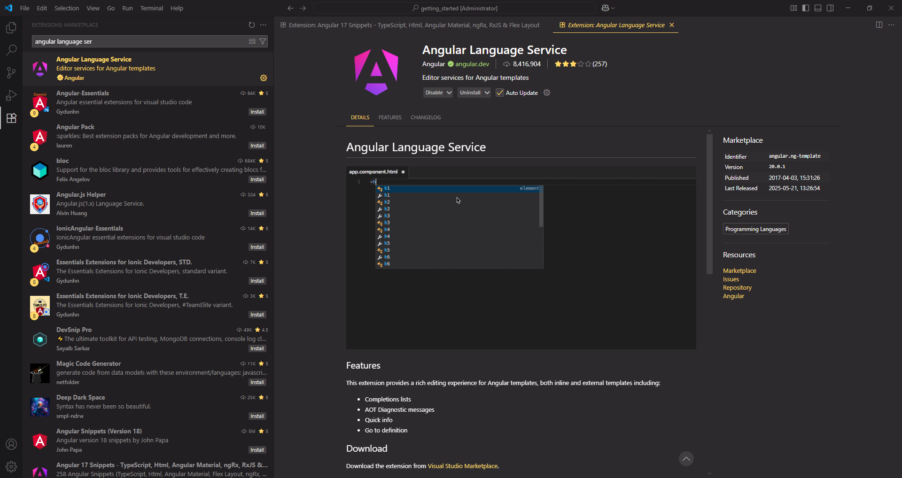
Angular Schematics
Run Angular CLI schematics directly inside VS Code via context menu or commands.
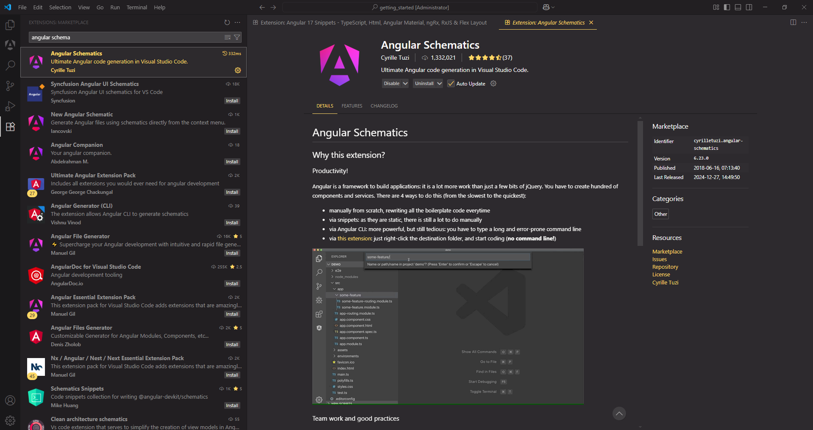
Angular2-inline
Syntax highlighting and IntelliSense for inline Angular HTML and CSS in TypeScript files.
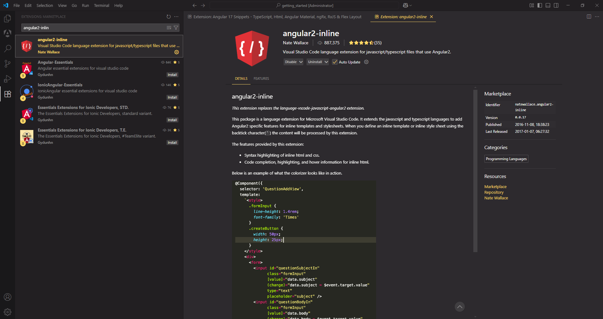
Auto Close Tag
Automatically closes HTML and JSX tags. Great for Angular templates.
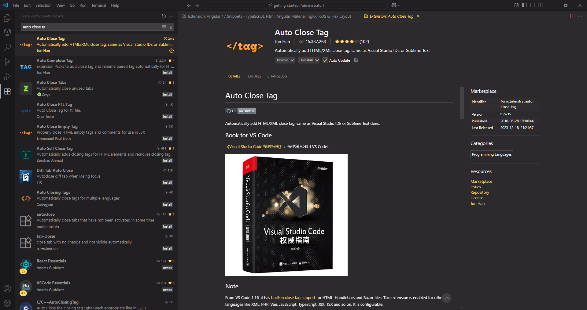
Auto Import
Automatically finds, suggests, and adds imports for your JavaScript/TypeScript code.
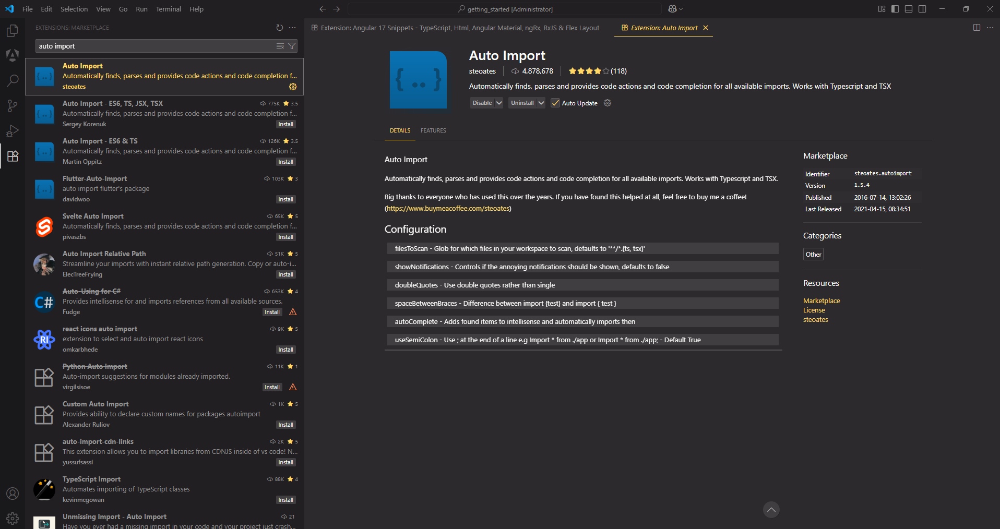
Better Comments
Organize your code comments using color and styling for TODOs, warnings, and notes.

Error Lens
Highlights errors and warnings inline with customizable colors and effects.
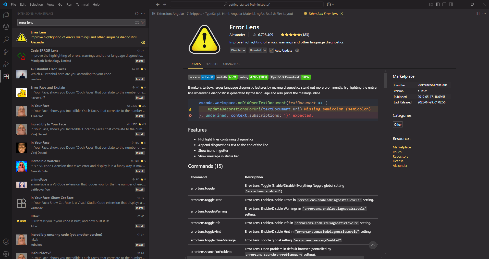
ESLint
Integrates ESLint into VS Code, providing real-time linting and auto-fixing capabilities.
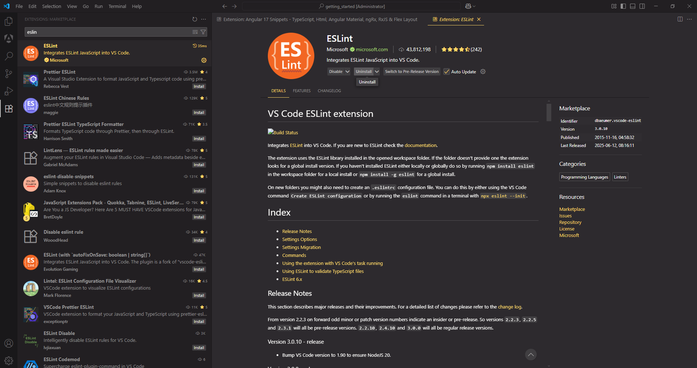
GitHub Actions
Manage and view GitHub Actions workflows directly from your code editor.
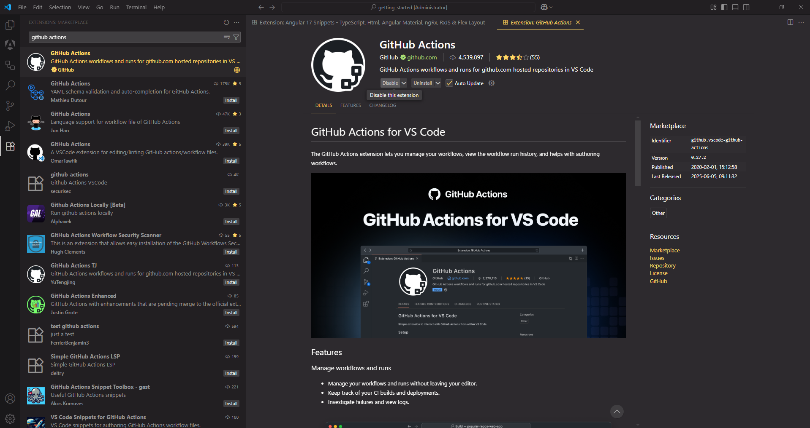
Live Server
Launch a local development server with live reload support for static and dynamic pages.
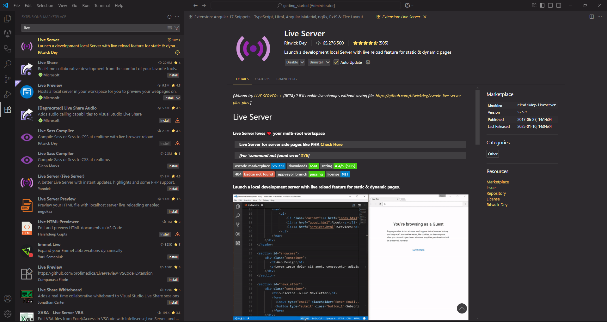
Live Server Preview
Preview your website inside VS Code with side-by-side rendering, similar to a browser.
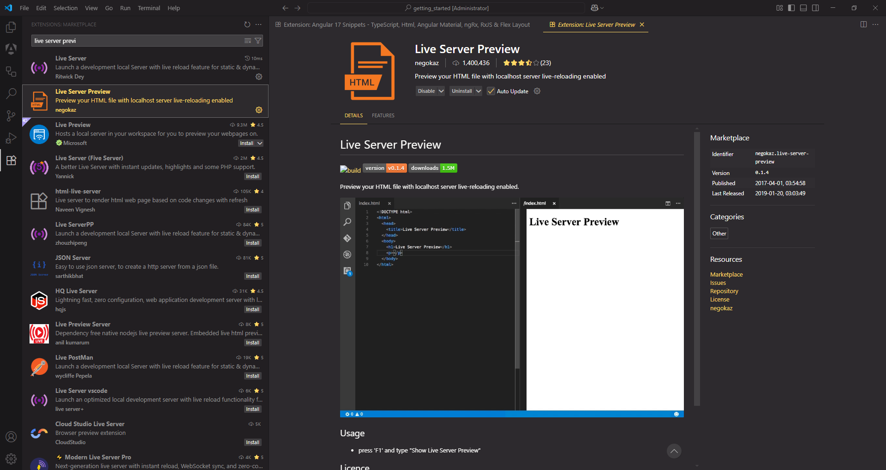
One Monokai Theme
A vibrant, modern dark theme based on the classic Monokai.
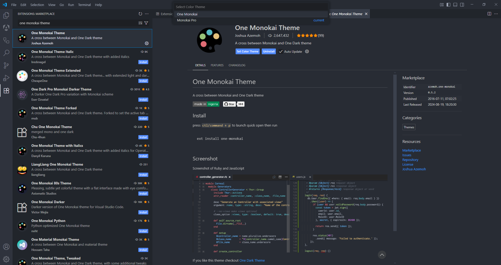
Paste JSON as Code
Converts copied JSON into strongly typed classes and interfaces for TypeScript and more.
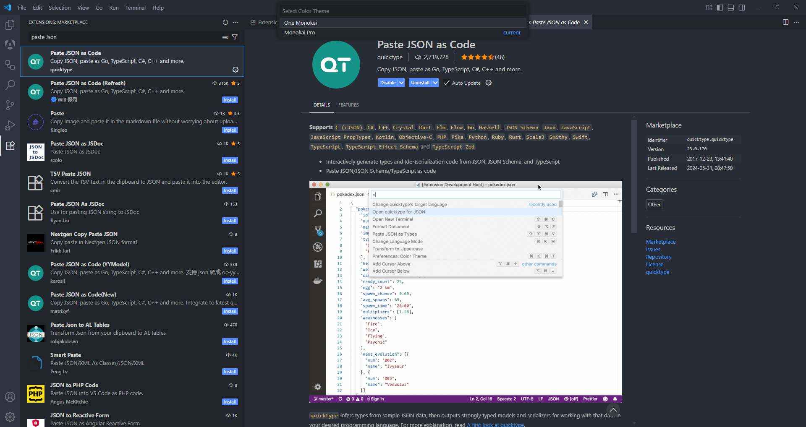
PrimeFlex 3 Snippets
Provides quick code snippets for PrimeFlex 3 utility classes.
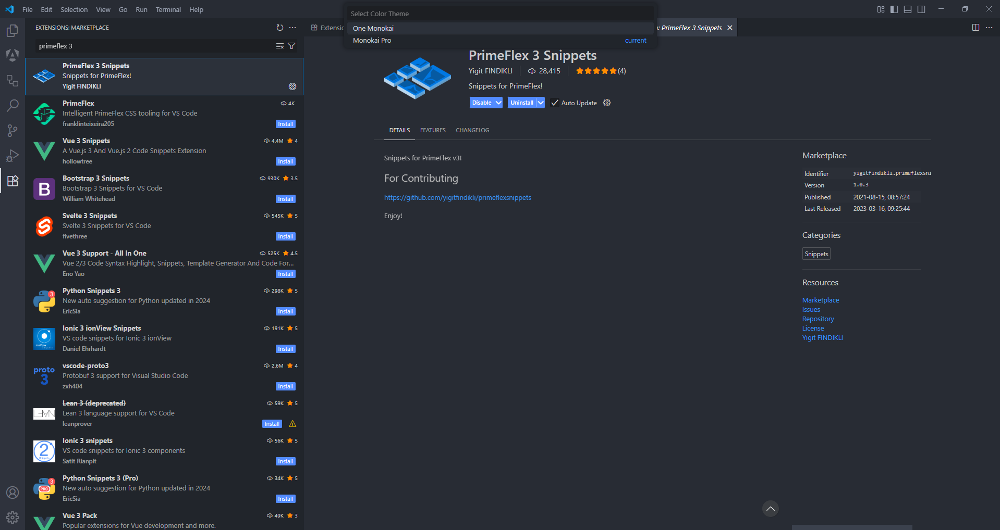
TypeScript Importer
Automatically searches for and inserts missing TypeScript imports as you type.
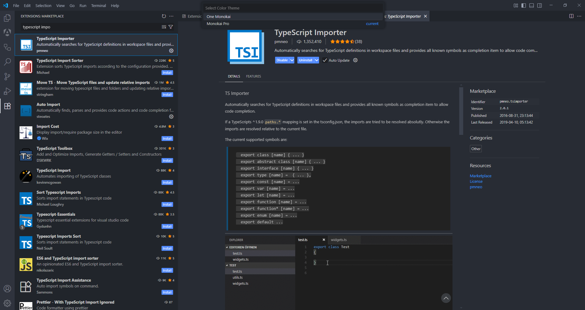
Unused Imports
Detects and helps you remove unused imports in TypeScript files.
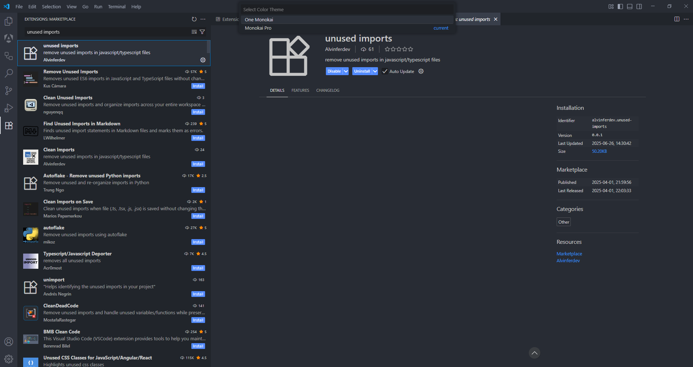